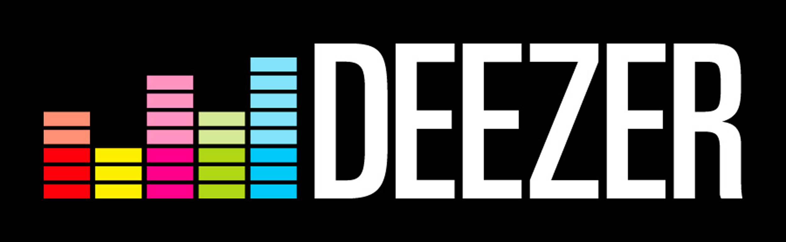

<!--
  Generated template for the Inicio page.

  See http://ionicframework.com/docs/v2/components/#navigation for more info on
  Ionic pages and navigation.
-->
<ion-header>
  <ion-navbar color="topMenu">
    <button ion-button menuToggle>
      <ion-icon name="menu"></ion-icon>
    </button>
    <ion-title>DeezerApp</ion-title>
  </ion-navbar>
</ion-header>

<ion-content padding>
  <!-- logo -->
  
  <!-- carusel de imagenes -->
  <!-- <ion-slides spaceBetween="10" pager>
      <ion-slide>
        
      </ion-slide>
      <ion-slide>
        
      </ion-slide>
      <ion-slide>
        
      </ion-slide>
  </ion-slides> -->

  <h1 class="titulo">Playlists Destacadas</h1>
  <ion-grid fixed>
    <ion-list ion-row>
      <ion-item ion-col col-12 col-sm-6 col-md-4 *ngFor="let lista of listasDestacadas; index as i">
        <ion-thumbnail item-left>
          
        </ion-thumbnail>
        <h2>{{ lista[i].title }}</h2>
      </ion-item>
    </ion-list>
  </ion-grid>

  <h1 class="titulo">Usuarios Destacados</h1>
  <ion-grid fixed>
    <ion-list ion-row>
      <ion-item ion-col col-12 col-sm-6 col-md-4 (click)="goToPlaylist(user)" *ngFor="let user of users">
        <ion-avatar item-left>
          
        </ion-avatar>
        <h2>{{ user.name }}</h2>
      </ion-item>
    </ion-list>
  </ion-grid>

  <!-- titulo -->
  <h1 class="titulo">DeezerApp - Ionic 3</h1>
  <p class="footer">App for Developers</p>
  
  <!-- botones -->
  <ion-row>
    <button ion-col col-6 ion-button full icon-left color="primary">
      <ion-icon name="logo-facebook"></ion-icon>        
      Facebook
    </button>
    <button ion-col col-6 ion-button full icon-left color="danger">
      <ion-icon name="logo-youtube"></ion-icon>
      Youtube
    </button>
  </ion-row>
</ion-content>
